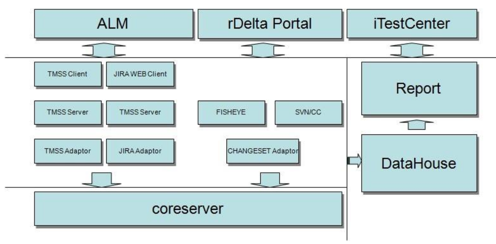

某公司ALM集成项目
项目的需求和背景
由于历史原因，某公司研发过程中，不同的团队/部门采用自己认同的支撑工具， 这些工具在初期对于整合/管理资源/统一协作起到不可磨灭的作用，同时也成 就了现在几个重要的工具负责/管理研发过程领域的局面，给管理人员带来了困 扰：
- 项目全局信息无法可视化
- 数据隔离在不同的工具中
- 很难形成贯穿周期的工作过程
- 维护和管理成本高
- 工具已经深入人心，成为客户的使用习惯，很难替换
实施完的效果
某公司集成项目是为某公司做的一个拉通各个不同领域的 ALM 管理工具的解决方案， 保证各节点高效访问、不同级别数据可以上下追溯、采集数据，并在此基础上 构建自己的数据仓库以及报表定制，主要的效果可以概括为以下几点：
- 完整的项目生命周期展示和管理
- 数据集中，快捷的数据共享
- 工具流程自动化，成本低，效率高
- 统一的接口规范，方便维护与管理
- 集成的方式并未取代过去的工具，最大程度的保持了用户的操作习惯
实现方案
本次系统的设计旨在拉通/整合各个 ALM 领域的工具，而工具、数据的整合方式有很多 种，例如可以简单地暴露工具的接口，让其他工具调用，或者把工具的数据导出，作为另一 个工具的导入，但是这些方式都不能完全保证数据的完整性和一致性，并且当特定软件升级 时，之前的整合代码就可能失效，需要投入大量的精力进行维护，又或者客户想替换掉某一 款工具，整合工作很可能是重新做一遍，系统的不稳定因素也随之扩大。
如图的项目方案，我们的做法是在每一个工具上面开发适配器，用于和 CoreServer 对接， 由 CoreServer 统一管控 ALM 资源，其中一个资源需要某一个领域的资源时，先通过访问 CoreServer，然后路由到具体的工具的适配器上请求资源，在打通各个工具后，之上还做了 全文检索、全景图、数据仓库，最上面的就是项目管理员需要看到的应用了。
项目分三期进行：
- 第一期是 POC ，简单验证方案可行性
- 第二期是继续完善第一期的功能，并开发上层管理员需要的应用
- 第三期是优化系统性能，并考虑系统备份，升级，容灾问题